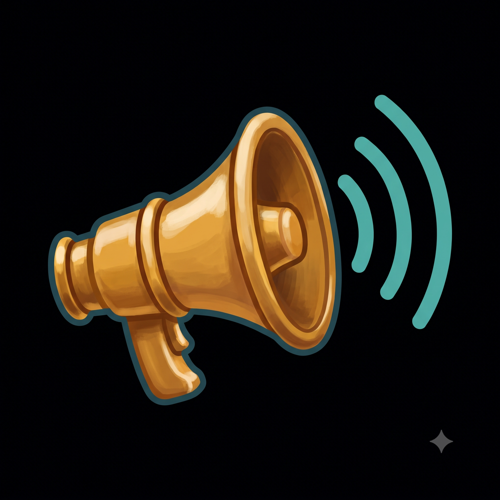
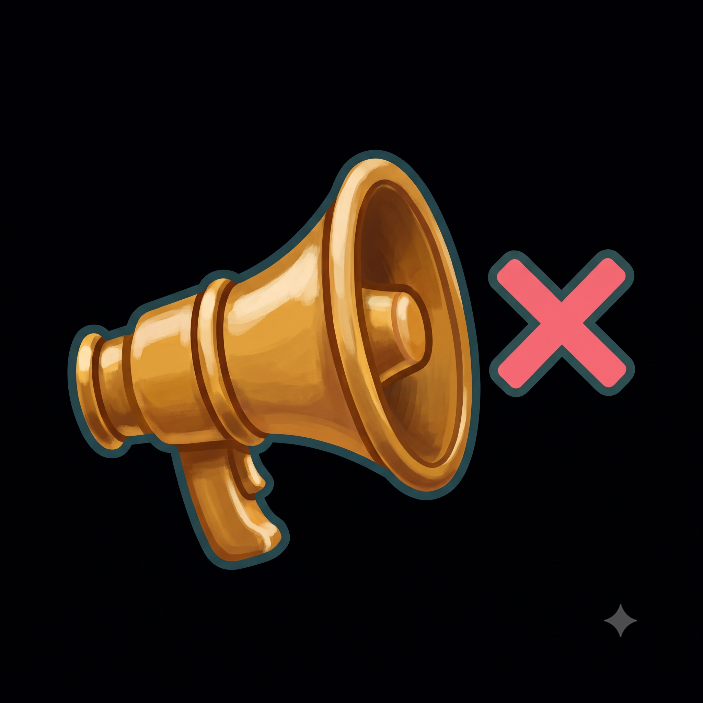
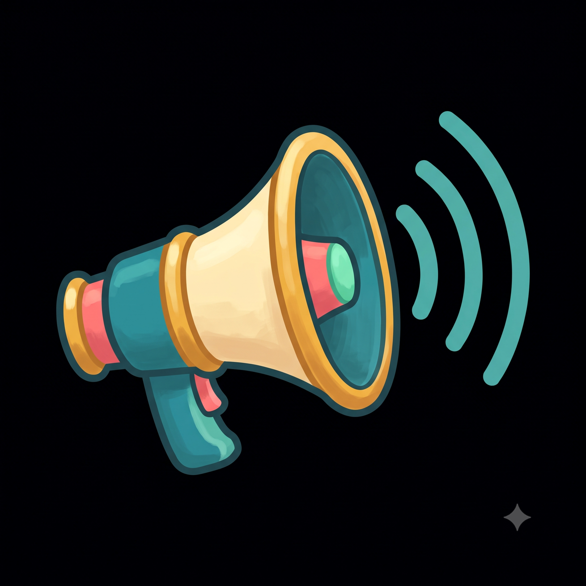
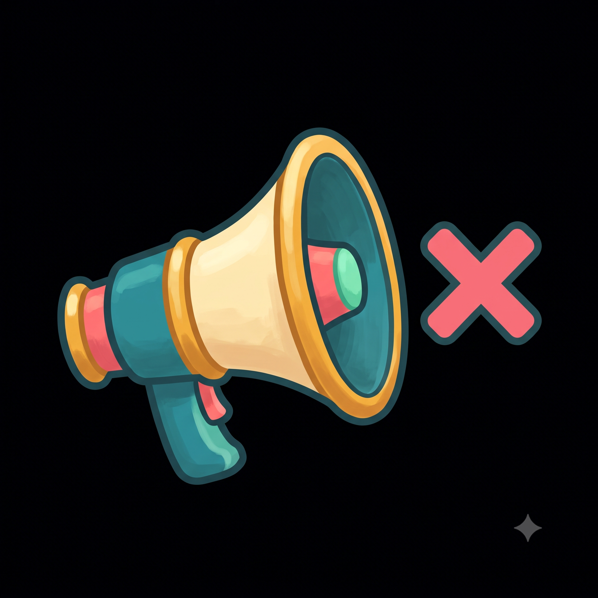

icons-sound)
Two new icons based on the 🔊 / 🔇 emoji, generated with the House Style from
.planning/art-audit.md, in warm polished brass to match the flippenator coin.
Raw, uncropped 2048×2048 generations on the flat near-black
(#000001) key background — nothing cropped, keyed, resized, or wired into the game yet.
The small strip under each one previews it at roughly the size it would actually render in-game
(18px inline, 24px button, 48px large) so you can judge small-size readability, not just the
big art.
Note: neither of these is in the art-audit inventory — there is no 🔊/🔇 anywhere
in index.html or src/, and no sound or mute control exists in the game yet.
This is new art ahead of a feature, not a replacement for an existing emoji.

1 — original: [House Style] … A single game icon of a brass ship's speaking-trumpet loudhailer (a flared megaphone horn) angled to the right, with three curved teal sound waves radiating out from its wide flared mouth to show that sound is ON, glossy, simple, bold and readable at small size like a mobile-game sticker. 1:1 square, centered, solid flat chroma-key near-black (#000001) background, no text.
2 — brass recolor: Go back to the FIRST image (the one with the three teal sound waves) and recolor the megaphone to warm polished brass, so it matches a pirate gold doubloon: the whole horn — body, flared cone, grip, and rings — should be one burnished brass/gold instrument, deep gold with rich amber shading in the shadows and pale creamy-ivory highlights where the light hits, softly polished metal with a gentle painterly sheen. Remove the teal and coral-pink body panels entirely; no teal or pink anywhere on the horn itself. Keep the soft dark-teal outline around the whole shape. Everything else stays identical: same shape, same angle, same position and size on the canvas, and the same three curved teal sound waves radiating from the mouth. Same flat chroma-key near-black (#000001) background, no gradient, no shadow, no vignette, no text or lettering.

Now make the matching MUTED version of that brass megaphone. Keep the identical brass horn: identical shape, identical brass/gold coloring and shading, identical angle, identical position and size on the canvas, same soft dark-teal outline. The only change is that the three curved teal sound waves are removed and replaced with a single bold coral-pink (#f2679e) X / cross mark with a soft dark-teal outline, sitting in the same space to the right of the horn's flared mouth where the waves were, to show that sound is OFF. Same flat chroma-key near-black (#000001) background, no gradient, no shadow, no vignette, no text or lettering anywhere.

